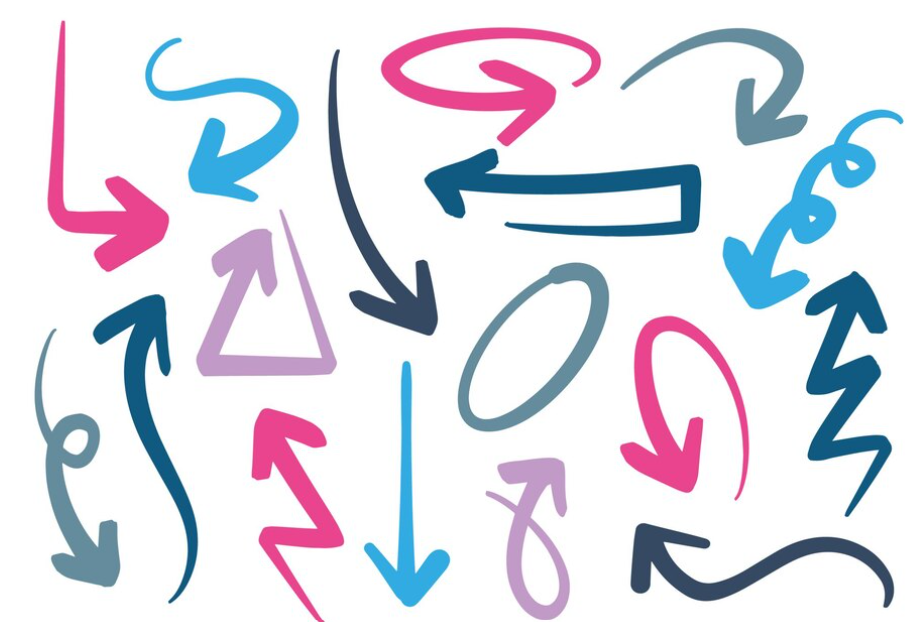
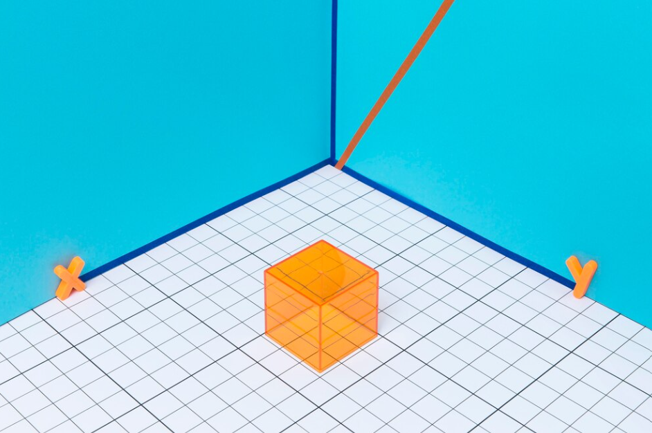

🔍 Temas para Tutoría en Vectores 🔍
Definición de vector

Un vector es una entidad matemática que representa una magnitud física con dirección y
sentido específicos. En otras palabras, un vector no solo tiene un valor numérico, sino
que también indica la dirección en la que actúa y su orientación en el espacio. Por
ejemplo, en un plano cartesiano, un vector puede representar la fuerza ejercida por un
objeto o la velocidad de un cuerpo en movimiento.
En términos más técnicos, un vector se caracteriza por su módulo (o magnitud), que
representa la longitud del vector, y su dirección, que indica hacia dónde apunta. La
representación geométrica de un vector suele ser una flecha que comienza en un punto de
origen y se extiende en una dirección específica.
Tipo de vectores
Los vectores pueden clasificarse en diferentes tipos según sus características y aplicaciones. Algunos de los tipos comunes de vectores incluyen:
- Vectores unitarios: Vectores con una longitud de magnitud igual a uno y se utilizan para indicar direcciones.
- Vectores libres: Vectores que tienen tanto magnitud como dirección, pero no están fijos en un punto específico.
- Vectores fijos: Vectores que tienen tanto magnitud como dirección, y están fijos en un punto específico en el espacio.
- Vectores ortogonales: Vectores que son perpendiculares entre sí en un espacio euclidiano.
- Vectores paralelos: Vectores que tienen la misma dirección o son múltiplos uno del otro.
Vectores en el espacio tridimensional
Los vectores en el espacio tridimensional son aquellos que tienen dirección y magnitud y se encuentran en un sistema de tres dimensiones (longitud, anchura y altura).
Se representan mediante un punto de origen (generalmente el punto cero) y un punto final en el espacio tridimensional.
Estos vectores pueden ser utilizados para representar desplazamientos, fuerzas o cualquier cantidad física que tenga una dirección y magnitud en el espacio tridimensional.
| Vectores unitarios | Son vectores con magnitud igual a 1 que indican únicamente la dirección en la que se mueve un objeto. Los vectores unitarios son fundamentales en cálculos de dirección y permiten expresar cualquier otro vector en términos de dirección. |
| Vector nulo | Es un vector que tiene una magnitud igual a cero y no tiene una dirección definida. El vector nulo se representa comúnmente como 0 y se utiliza en varios cálculos matemáticos y físicos. |
| Vector opuesto | Cada vector tiene un vector opuesto que tiene la misma magnitud pero dirección opuesta. Si consideramos un vector como un desplazamiento en una dirección, su vector opuesto representaría un desplazamiento en la dirección opuesta. |